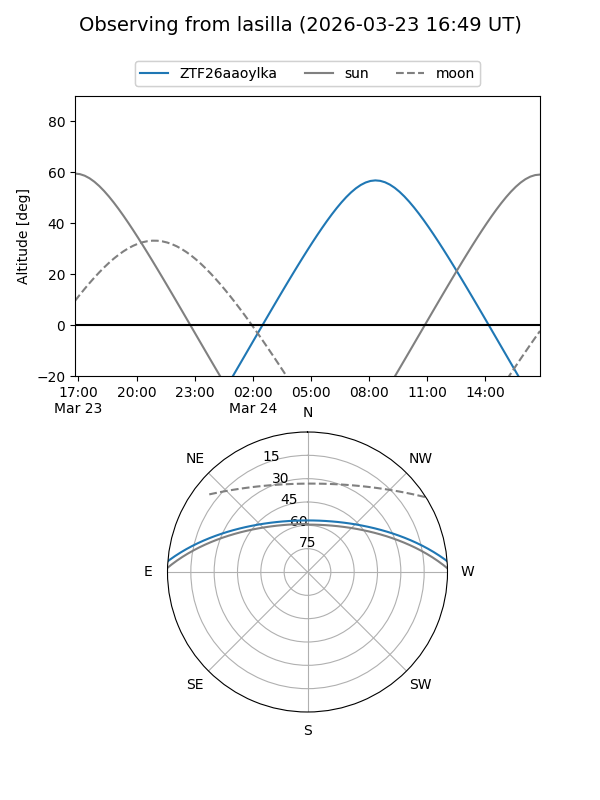
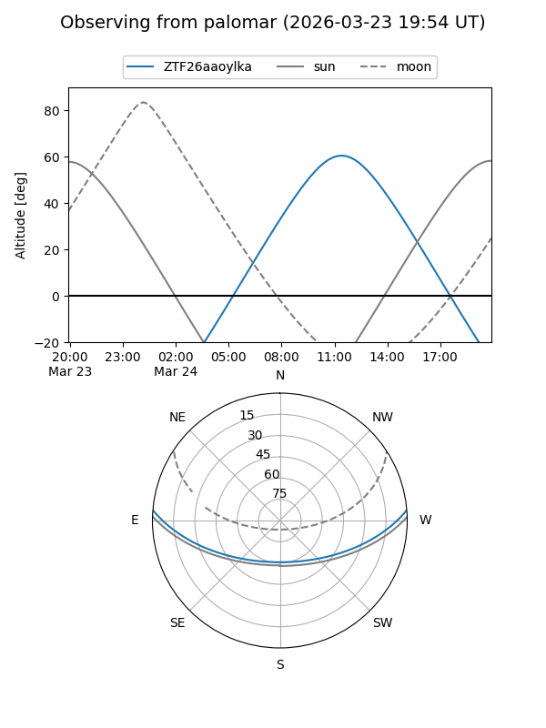

ZTF26aaoylka
Target ZTF26aaoylka at 2026-03-23 12:59
Aliases and brokers:
FINK: link
Lasair: link
ALeRCE: link
alt names
ZTF26aaoylka (ztf,fink_ztf)
Coordinates:
equatorial (ra, dec) = 235.8223,+3.98439
equatorial (HMS+DMS) = 15:43:17.34,+03:59:03.82
galactic (l, b) = (11.1967,+42.95314)
Flags:
Photometry:
last ztfg=18.16
1 ztfg detections
Lightcurve
Visibility


Additional plots